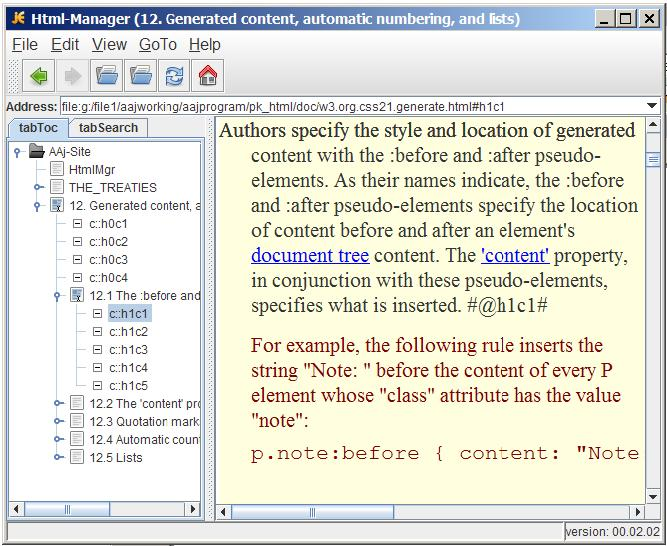

HtmlMgr
Home-WebPage
HtmlMgr (Html-Manager) is a simple open-source java html-browser, that:
a) Creates automatically the Table-of-Contents (ToC) of html-files
that contain LocDocs
(= Locators inside Documents).
b) Shows in the ToC, the location of a mouse-click inside the doc.
c) Indexes the words and terms (= sequence of characters that contain
'-','_',''') of the files, with the LocDocs they reside, and
makes a very fast full-text search.


#h0.1p1#
DEFINITION:
LocDoc (= Locator inside Document) is a
URL
that denotes a PORTION of an html-text-file, like the file you
are reading which also includes LocDocs.
HtmlMgr demostrates the usefulness of LocDocs .
#h0.2p1#
FORMAT:
- h0, h0c1, h0c2, ...
- h1, h1c1, ... h1.1, ... h1.2, ... h1.2.1, h1.2.1c1, h1.2.1c2, ...
- h2, h2c1, ... h2.1, ... h2.2, ... h2.2.1, h2.2.1c1, h2.2.1c2, ...
...
- h?, h?c1, ... h?.1, ... h?.2, ... h?.2.1, h?.2.1c1, h?.2.1c2, ...
#h0.2p2#
EXAMPLE-FILES:
In the "doc" directory I have some example-html-files with LocDocs.
1) a big law-file:
Law_Eu_Treaties_2008.html.
I have done some processing on this file, but you can see my objective.
This file is my approach to online-law-texts.
2) a w3.org recommendation file:
w3_org_css21_generate.html and
3) this file.
#h0.2p3#
IMPLEMENTATION:
I have implemented LocDocs using the existing html-standards.
a) I used XHTML 1.0 Strict files, for increased consistency.
b) I used h1, h2, ... elements as heading-elements and paragraph-elements
as content-elements.
c) A css can serve for consistent presentation and
d) We have only to add an empty-anchor-element with the name-attribute
and value the LocDoc in the beginning and another achor-element with
class-attribute "hide" at the end of heading and content elements.
For example:
<p>
<a name="h2c5"/>
...
<a class="hide">#h2c5#</a>
</p>
#h0.2p4#
WHAT WE NEED (STANDARDIZATION):
By standardizing LocDocs:
1) anyone could REFER to any place INSIDE an
html-file without knowing the concrete anchors the author uses inside
his document.
2) the web-browsers, will create automatically the ToC of the
files, will show the location we are reading in the Toc and will make
fast full-text searches, because any word|term will reside in a
unique LocDoc. My HtmlMgr proves this (2) argument.
We need:
a) an h0-element for the title of the document, but to display as
the other heading. Also we could add and h7, h8, h9 elements,
just in case anyone could need them but to suggest not to use them.
b) a content-element (<c>) and anything that can serve as
content (=information), text, audio, image, video to reside inside
this element.
- lists (ol, ul, dl) and tables, are considered content.
- it is useful to add and sentence-elements, and to have locators
and for every sentence, inside paragraphs.
- Finally syntax and meaning elements could be added to resolve
ambiguities in the text that the reader will NOT see when he reads
the text, but he can have access to them if he needs them.
At the same time, any program that manages text, can use them
in order to do a better job, eg translation.
#h0.2p5#
DEVELOPMENT-STAGE:
The program is in alpha version, but its main functionality works.
I've tested ONLY in windows!!!
#h0.3p1#
WHAT-YOU-NEED-TO-RUN-IT:
Download the file HtmlMgr-date-version.jar, which contains the
executable-code, the source-code and the example-html-files.
*
HtmlMgr-2010.06.02-00.02.02.jar, bug-fix release.
*
HtmlMgr-2010.05.30-00.02.02.jar
#h0.3p2#
HOW-TO-RUN:
A-method:
Unzip the jar-file and double-click on runHtmlMgr.bat file.
B-method:
1) create a folder and store the jar-file you downloaded.
2) unzip this jar-file (which is a zip-file) in the same directory.
You need the directory "doc", which contains the example-html-files
with LocDocs, to be in the same directory with the jar-file.
3) double-click on the jar-file. I suppose your system has java installed.
Alternatively you can run the command, from the downloaded-directory:
java pk_Html.HtmlMgr
#h0.3p3#
HtmlMgr now is an html-viewer. I call it "manager" because I would like
to incorporate the functionality of the
Ekit html-editor,
an open-source java program of Howard Kistler.
Then we could create html-text-files with the HtmlMgr and LocDocs
could be added automatically.
#h0.4p1#
Exit:
#h0.4.1.1p1#
Unimplemented
#h0.4.1.2p1#
Unimplemented
#h0.4.1.3p1#
Open-Directory:
Opens a directory with LocDoc-files and creates recursively the ToC
of its subdirectories and of the files in these directories,
AND indexes the words and terms of all these files.
#h0.4.1.4p1#
Open-File | ToC:
Opens ONE LocDoc-file, or
opens a "toc.xml" file that contains a structure of LocDoc-files
and creates a ToC of these files with the structure denotes in
the toc.xml file.
#h0.4.1.4p2#
Back:
Goes to previous LocDoc.
#h0.4.1.4p3#
Forward:
Goes to next LocDoc, IF we navigate in the history of LocDocs.
#h0.4.1.4p4#
Home:
Goes to this file.
#h0.4.1.4p5#
Reload:
Reloads the displayed-file.
#h0.4.1.4p6#
List-Directory:
Lists the contents of a directory, so you can copy this list.
#h0.4.1.4p7#
About HtmlMgr:
#h0.4.1.5p1#
Java does not support yet the "display" property. So the LocDocs
always appear. Today browsers, hide them and display only when the
we put the mouse over the paragraph.
#h0.4.2p2#
Infinite things!!!
#h0.4.2p1#
2010.05.30:
FIRST release of the HtmlMgr.
#h0.4.3p3#
2010.05.24:
Project registration.
#h0.4.3p2#
2010.04:
HtmlMgr is part of my life-long AAj project, a knowledge-management project.
I begun HtmlMgr using the open-source code of
jEdit's help package
of Slava Pestov and jEdit's plugin InfoViewer of Dirk Moebius.
#h0.4.3p1#
GNU GENERAL PUBLIC LICENSE (GPL)
#h0.4.4p1#
Kaseluris-Nikos.
#h0.5p1#
- Description
- LocDoc
- Download
- The Program
- Author
- Table of Contents
LAST-MODIFIED: 2010.06.14
PUBLISHED: 2010.05.30
CREATED: 2010.05.26
URL: http://htmlmgr.sourceforge.net/index.html
MAIL: userid@domain, where userid=nikkas and domain=otenet.gr